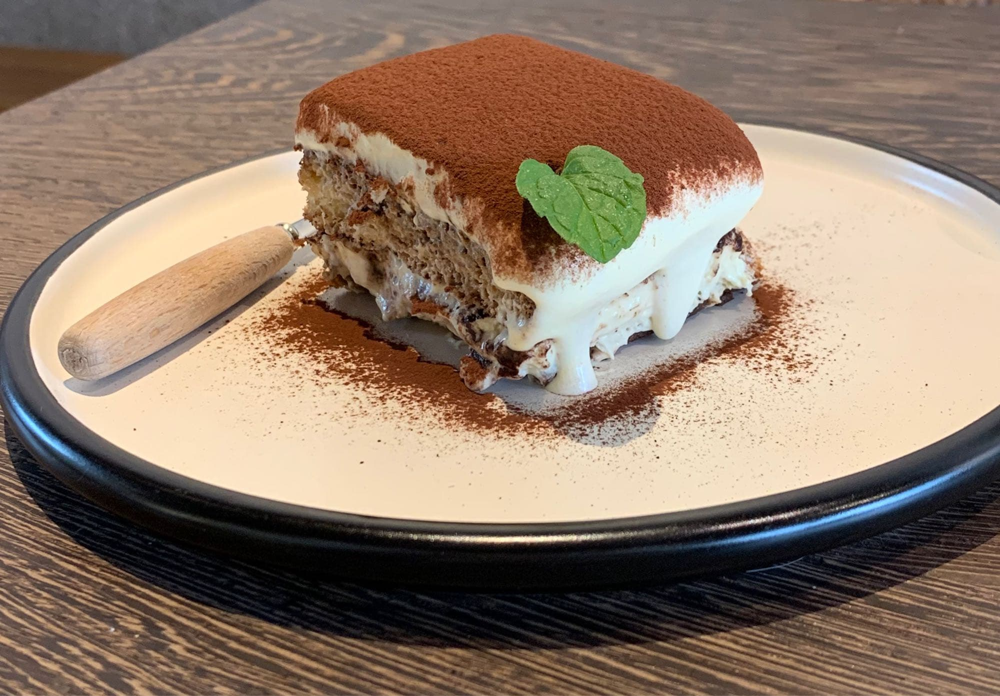

過敏體質請務必要向店員通知，讓我們給您最好的體驗
奶油松露義大利麵
綿密的奶油醬帶著松露特有的濃郁香氣，每一口都讓人彷彿置身於高雅的義式餐廳。滑順的麵條 與醬汁完美融合，松露的深邃氣息恰到好處地提升了整道料理的層次感。搭配微微的蒜香和些許 帕瑪森起司，香氣與口感交織出一場無法抗拒的美味協奏曲。這樣的美食，不僅是一道菜，更是 一種幸福感的展現。
海鮮煎餅
海鮮煎餅是一道充滿驚喜的美味佳餚！金黃酥脆的外皮，入口即能感受到那令人滿足的酥香， 而內餡則藏著鮮美的海味，每一口都散發著大海的氣息。彈嫩的蝦仁、鮮甜的魷魚，搭配細 緻的青蔥與香料，層次豐富而不失平衡。尤其是剛出鍋時的那股熱騰騰的香氣，瞬間勾起食 慾，讓人忍不住一片接一片地享用。這不僅是一道料理，更是對舌尖的一次愉悅款待！
豚骨拉麵
濃郁醇厚的豚骨湯底，經過長時間熬煮，散發出迷人的香氣，每一口都帶著濃縮精華般的 滿足感。彈牙的麵條完美吸附湯汁，配上滑嫩的溏心蛋、細膩的叉燒，以及清香的蔥花 和脆爽的木耳，讓整碗拉麵層次豐富，滋味無窮。無論是寒冷的日子還是心情低落的時 刻，這一碗暖心的豚骨拉麵，總能給人帶來溫暖和力量！
提拉米蘇
細膩綿滑的馬斯卡彭奶酪與輕盈的蛋糕層完美融合，帶來入口即化的絕佳口感。微苦 的咖啡和濃郁的可可粉為甜美增添了一絲成熟的韻味，平衡得恰到好處。每一口都 像是在品味一段浪漫的義大利詩篇，柔和而深情。無論作為餐後點心還是下午茶的伴 侶，提拉米蘇總能讓人感受到幸福與甜蜜的交響曲
草莓派
脆口的派皮外層，包裹著新鮮多汁的草莓，鮮紅的色澤與甜美的香氣令人一眼就 愛上。每一口都能感受到草莓的鮮甜與微微的酸味，搭配絲滑的內餡，口感豐 富又層次分明。無論是搭配一勺鮮奶油還是撒上一些糖粉，這款草莓派都能帶 來一份滿滿的幸福感，讓人彷彿置身於春暖花開的美好時光。